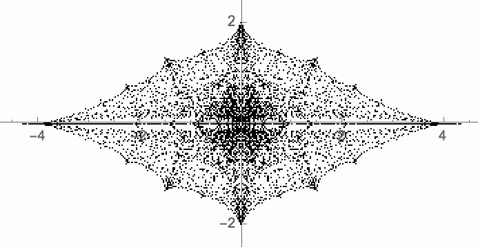

(Ongoing) MSc. project: Deformation spaces of Kleinian groups
Here is a picture of the Riley slice, as studied by Keen and Series:
- Contributed talk for the MATRIX workshop on groups and geometries discussing recent work done jointly with Gaven Martin and Jeroen Schillewaert: presentation slides (2/12/21). Due to time constraints slides 2-6 and 23-33 were skipped. Also some presentation slides on the Farey polynomials for the Waiheke workshop (6/12/21).
- Riley slice computational package (GitHub).
- Some animations.
- Some limit sets.
- Half-year Postgraduate Project Presentations talk, July 2021: Presentation slides.
- Talk for the UoA Dept. of Mathematics Student Research Conference, June 2021: Extended abstract; presentation slides.